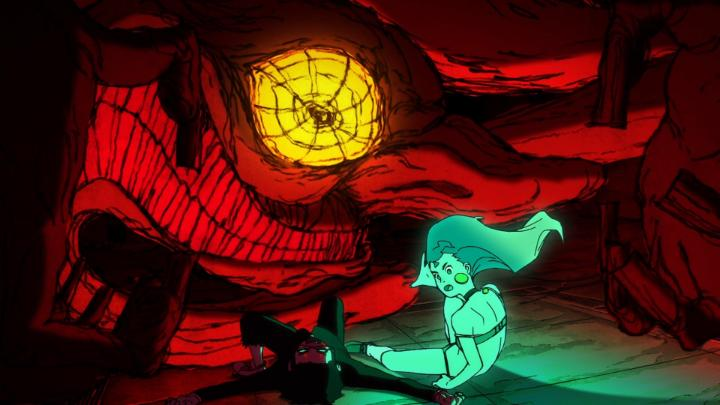

Disclaimer: This review covers Season 1 of "Dan Da Dan," consisting of 12 episodes.In 2024, I can't think of an anime that had as much hype and discussion as "Dan Da Dan," based on the recent ongoing hit manga of the same name. Science Saru ran the production, after a series of shows and movies that further positioned itself as one of the most exciting anime studios of the post-pandemic era. Curiously, GKIDS licensed the show in North America, one of their very few "currently airing" TV anime licenses (I still lament that the company is going all-in on anime at the expense of other international animation, but I digress). And perhaps because of their ongoing relationship with Saru and their movies, and perhaps because of not being tied to practices of other anime distributors, they released an American Bluray set QUICKLY, and AFFORDABLY. Hey, with home media and affordability costs being in jeopardy in all directions, I'll take these small wins when we get them. Even though the content is from a manga, I'd describe this as Science Saru's excuse to make a sci-fi-laced super-hero anime. The two high-school protagonists are Momo, a bold girl who believes in ghosts, and Ken ("Okarun"), a shy loner geek that believes in aliens. Despite not knowing each other, they end up spatting and daring the other to haunted locations to find an alien and/or a ghost. They get more than they bargained for, discovering that both aliens and ghosts are in fact real, and quite dangerous. As both are threatened with being raped or probed (more on that in a minute), Momo's latent psychic powers awaken, and Okarun's possession by a ghost gives him the speed and strength of a superhuman monster. With the help of Momo's unusually young and hot grandmother (a professional medium), they end up uncovering a series of supernatural events throughout the town, barely surviving each attack as they come. Crazy aliens and demonic ghosts. Flashy action. Cool, cool. But what will probably stand out up front is the plot's casual obsession with genitals. Both aliens and ghosts seem to want them; in the English dub, they call it "banana," "dong," "peen," and other phrases. Season 1 has three arcs, the latter two revolving around recovering Okarun's stolen balls. Yes, I'm not making this up. On one hand, it's surprising, and is a big part of what makes the show so funny - "Dan Da Dan" would be a riot at your local anime club or convention screening. It's also a little weird that it's SO engrained in the show's plot, and I have no doubt the threat of rape will trigger certain viewers. Episode 12 ends on a particularly disturbing cliffhanger that makes Season 2 required viewing. I wouldn't trust anyone but Science Saru to handle such material, but even they seem to have trouble balancing that subject matter. That aside, the show has an easy monster-of-the-week type of setup. But as common as that sounds, the show finds ways to elevate it. The ghosts are vicious, threatening, and genuinely scary. They each also get tragic backstories of how they came to be, revealed towards the end of their arc (while effective, it's also repetitive, such that the last one in Season 1 almost feels like a knowing self-depricating joke). And the action... wow, the action! Their fights are setpieces that make the show worth watching.  And at the heart are Momo and Okarun, specifically their dynamic together. At first, they're an unlikely pair, arguing and swearing at each other more than casually speaking. But with the shared and unique supernatural experiences they share, their friendship quickly strengthens, and the plot teases it growing to romance. Romance for silly reasons: Momo is obsessed with a cool actor who Okarun shares the same name and some traits as, and Okarun for Momo being the first and only friend he's really ever had. But these are teenagers, they're young. And despite Momo's over-dramatic reactions and the pair's misunderstandings, they're a cute couple. The show is at its best when it focuses on them, or at least them working together (and less so when secondary rival characters are introduced, but that's par for the course). Momo is clearly the main protagonist, her psychic powers being critical to both Okarun and the monsters they face, and her quick thinking often saving the day. Okarun's place is to be the ace-in-the-hole when raw power is needed. Within the first Season, Okarun has the strength to only go "full power" twice in a battle before checkign out, an oddly specific trait that sounds like a video game restriction. Momo also tends to be thrown 100 meters away at full force into brick walls, and somehow survives, despite not having the power Okarun does. There are definitely odd quirks here if you think too hard about the plot, but my guess is this is not an anime you're supposed to think too hard about. It's supposed to be fun. And "Dan Da Dan," named simply on that classic sound during dramatic scenes in movies, is very fun. Visually, the show looks good, but better in some ways than others. Human designs feel commonplace, but monster designs feel unique and scary, if only because of their smiles, often baring long rows of teeth. The animation is a more impressive feature: there's a ton of action scenes, featuring environment destruction, wild camera movement, and face-paced motion, and it's beautiful. But even "quieter" scenes have a lot of great character animation, often because our human characters argue and tease each other so much, which is in line with what I'd expect with Science Saru. The English dub is good, matching the energy required of characters in their respective scenes, and with good use of modern slang (although purists won't be happy with those liberties). The music actually surprised me... usually, the score is just in the background and often goes unnoticed, but not here. There are several moments where the music takes center stage, and I recognized how varied and generally awesome it was, including a well-used remix of the "William Tell Overture." It almost makes up for the opening and ending themes, which are good, but I'm annoyed they both weren't 10 out of 10 catchy. The result is a charming, big action spectacle called "Dan Da Dan." The first episode by itself is a great stand-alone short film if you don't want to commit to the whole thing. But you probably won't stop at one, and the episodes are hard not to binge in one sitting. Whatever flaws are present, I haven't seen an anime this bold and this unhinged since "FLCL," and if that's not an endorsement, I don't know what is.
- "Ani" More reviews can be found at : https://2danicritic.github.io/ Previous review: review_Dagashi_Kashi Next review: review_Dance_in_the_Vampire_Bund